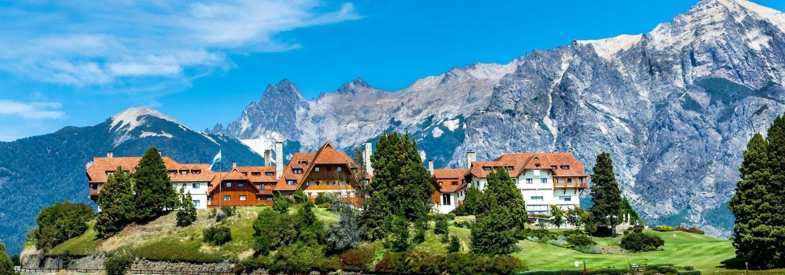

Bariloche
Imposible no inspirarse con tanta belleza

Bariloche es, para muchos, una de las ciudades más
bellas de Argentina. Su ubicación, en la Patagonia
argentina, ofrece unos paisajes inigualables que
encontrarás en pocos lugares del mundo. ¿Estás pensando
visitar este increíble lugar? Aquí te cuento las cosas
imprescindibles que hacer en Bariloche.
1-Parque Nacional Nahuel Huapi
Una ciudad con lago siempre tiene un toque especial y
esa es una de las cosas más especiales de Bariloche.
Este lugar se encuentra a orillas del Lago Nahuel Huapi,
un nombre mapuche cuyo significado es Isla del Jaguar y
que cuenta con un parque nacional con infinidad de
actividades que realizar (algunas de ellas te las
contamos a continuación).
Caminatas, escalada, deportes de aventura e incluso
navegar en el propio lago… el Parque Nacional Nahuel
Huapi es un lugar en el que podrás pasar varios días sin
tener ni un minutos de aburrimiento. Analiza bien cada
una de las actividades que ofrece este lugar y organiza
cuáles quieres hacer para aprovechar al máximo tus
vacaciones en Bariloche.
2-Playas al orilla del lago
Aunque el clima en Bariloche alcanza a lo largo del año
temperaturas bajo cero, hay días en los que el sol sale
a relucir. Este es el momento perfecto para sacar el
traje de baño y preparar un buen picnic para disfrutar
de un día a orillas del Lago Nahuel Huapi.
En Bariloche encontrarás diversas playas, algunas en la
misma ciudad y otras en los alrededores en las que
puedes disfrutar de las aguas de este lago (¡solo aptas
para aquellas personas que estén preparadas para
soportar bajas temperaturas!). Cómo llegar a las playas
de Bariloche? como te contamos, hay playas alrededor de
todo el lago. Te recomendamos ir caminando a orillas del
lago y elegir la playa que más te guste.
3-Visita sus cerros
Bariloche está rodeado por varios cerros que son
perfectos para realizar caminatas, pero sobre todo son
el destino perfecto para las vacaciones de invierno. En
esta época, la ciudad se llena de turistas aficionados
al esquí, ya que aquí se encuentra el Cerro Catedral con
la estación de esquí más grande del hemisferio sur.
Además, puedes visitar, entre otros, el Cerro Tronador,
el más alto de la zona y en cuya base se encuentra el
glaciar Ventisquero Negro, el Cerro López, ideal para
realizar diferentes deportes de aventura y el Cerro
Campanario, con una de las vistas más bonitas de la
zona.
4-La ruta de los 7 lagos
Además del Nahuel Huapi, cerca de Bariloche se esconden
diferentes lagos a los que podrás llegar a través de
maravillosas rutas rodeadas de una naturaleza
espectacular. La conocida como Ruta de los 7 Lagos no se
encuentra en Bariloche, pero merece la pena moverse unos
80 kilómetros al norte, hasta la ciudad de Villa La
Angostura, para recorrer este camino que lleva hasta la
localidad de San Martín de los Andes.
Son un total de 110 kilómetros que podrás recorrer en
auto y, si lo deseas, algunas etapas a pie, y en los que
encontrarás un total de siete lagos de diferentes
tamaños y colores. Por supuesto, no te olvides de meter
el traje de baño en la mochila porque algunos de estos
lagos son perfectos para pegarte un chapuzón.
5-Centro de Bariloche
Sabemos que cuando visites Bariloche tu principal
objetivo será disfrutar al máximo de las maravillas de
la naturaleza que hay en este lugar, pero te recomiendo
que te guardes unas horas para recorrer el centro de la
ciudad, el cual también tiene mucho encanto.
No te puedes perder la Catedral de Nuestra Señora de
Nahuel Huapi, una preciosa construcción de estilo
neogótico situada a aguas del lago. Además, date una
vuelta por el Centro Cívico de Bariloche, con una bella
arquitectura poco usual en la zona y aprovecha para
probar los famosos chocolates del lugar.
Cómo llegar a Bariloche: la ciudad de Bariloche cuenta
con vuelos directos desde diferentes ciudades de
Argentina y de países limítrofes como Brasil.
6-Bosques de Arrayanes
Uno de los lugares más bonitos del Parque Nacional
Nahuel Huapi es el Bosque de arrayanes, un árbol que
crece en los bosques templados de Chile y Argentina con
una preciosa y llamativa corteza naranja.
Si te desplazas hasta este lugar, podrás pasear por una
península que está repleta de esta especie de árbol y
realizar unas caminatas verdaderamente preciosas que
disfrutarás al máximo tengas la edad que tengas ya que
no cuentan con mucha exigencia física.
Cómo llegar al Bosque de arrayanes: para visitar el
Bosque de arrayanes tendrás que atravesar el lago Nahuel
Huapi desde Puerto Pañuelo. Si prefieres hacer la
excursión por tierra, tendrás que partir desde Villa La
Angostura.
7- Deportes de aventura
Si eres de esos que busca aventura en cualquier destino
que pisa, entonces Bariloche tiene que estar en tu lista
de próximas vacaciones. Aquí hay de todo: desde el ya
mencionado esquí en las mejores pistas de la región
hasta rafting, canopy, windsurf, buceo, kayak, mountain
bike… ¡tienes infinidad de actividades para elegir!
Dónde hacer deportes de aventura: las opciones son
innumerables, ya que entre los lagos y los cerros tienes
una gran variedad de deportes de aventura para hacer.
Primero tendrás que elegir el destino y luego las
actividades disponibles en ese lugar.
8-Circuito Chico
Uno de las principales actividades que hacer en
Bariloche principalmente en la época de verano es el
Circuito Chico, un recorrido circular de 65 kilómetros
que puedes realizar en auto o en bicicleta (hay diversos
puntos en los que alquilar una de ellas a lo largo del
camino). Los principales atractivos de este lugar son la
Villa Llao Llao, rodeada por dos lagos, y algunos
miradores como el del Lago Escondido, el del Puente
Arroyo La Angostura y el del muelle Bahía López.
Cómo llegar al Circuito Chico: como conté anteriormente,
este circuito se puede hacer en auto o bicicleta, pero
también con una agencia de viajes.